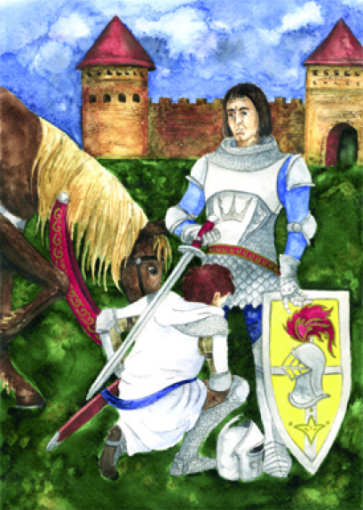
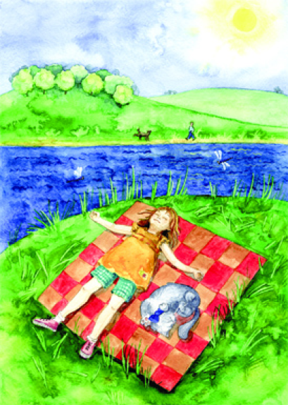
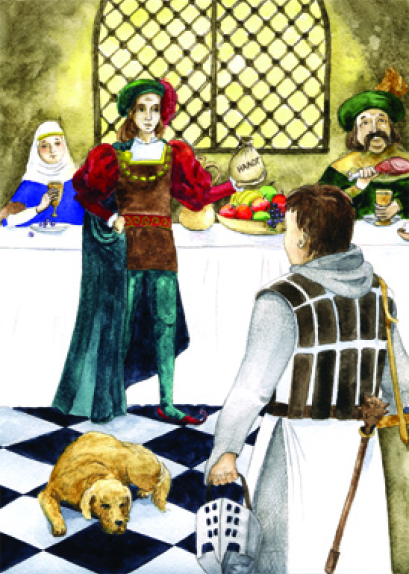

Однажды летом Лиля и Кот приехали в деревню навестить любимую бабушку. Девочке очень нравились свежий воздух и красивое
озеро неподалеку от дома.
В полдень друзья отправились гулять. Веял легкий ветерок, ярко светило солнце. Лиля расстелила покрывало в высокой траве
на берегу озера и устроилась с Котом поудобнее. Она любила лежать на спине и наблюдать за облаками. Над головой
пролетали стрекозы с разноцветными крылышками, рядом назойливо трещали кузнечики. Друзья почти задремали, как вдруг
услышали всплеск.
По берегу озера прогуливался соседский мальчишка. Лиля видела его во дворе. Она не знала имени мальчика, но ей нравились
его карие глаза и взъерошенные волосы. В игрушечных доспехах и с мечом, он часто изображал рыцаря, а его верный пес —
лошадь.
— Кот, давай познакомимся с нашим соседом, — предложила девочка.
— Мальчик с собакой, а эти странные животные недолюбливают котов, — ответил тот, — особенно благородной породы. Не буду
же я с ним драться! Я так долго с утра прилизывал шерстку!
— Эх! Придется самой! — вздохнула Лиля и помахала мальчишке рукой.
— Сэр! — осмелел Кот. — Мы хотим познакомиться с вами и вашей... э-э-э… собакой.
— Где вы видите собаку? — серьезно спросил мальчик. — Это мой боевой конь! Он участвовал во многих сражениях!
— Как зовут тебя, рыцарь? — включилась в игру девочка.
— Я — благородный рыцарь Арчибальд, сборщик налогов и податей! —
гордо ответил мальчик.
— А мы — усталые путники. Заблудились и прилегли отдохнуть. Мы хотим узнать историю рыцарства! —
озорно подмигнула Лиля.
— Не в моих правилах отказывать прекрасной даме, — согласился мальчик. Он преклонил перед Лилей
колено и начал свой рассказ.
– Я расскажу вам о рыцарях. Быть рыцарем почетно, ведь это люди честные, щдерые и смелые в
бою. В десять лет мальчика благородного происхождения или сына знатного горожанина отправляли на службу. Сначала он был
пажом и учился хорошим манерам, пению и танцам. В четырнадцать лет становился оруженосцем и следил за лошадьми и
доспехами своего рыцаря.
— Как это? — оживился Кот.
— Кольчугу нужно было протирать, шлем чистить до блеска и смазывать
маслом, а лошадей — кормить. Потом мальчика обучали военному ремеслу: ездить верхом на боевом коне и наносить удары
копьем на полном скаку. Оставаться при этом в седле было очень трудно.
К двадцати одному году оруженосца посвящали в
рыцари. Это делал какой-нибудь благородный сеньор или даже сам король, если оруженосец служил у него. Иногда в рыцари
посвящали прямо на поле боя, но чаще устраивали веселый праздник, а после него — турнир.
Кот насупился.
— Что
случилось? — поинтересовалась Лиля.
— Я не чувствую себя благородным! — грустно ответил Кот. — Я не знаю военных
хитростей!
— Так ведь уже не средние века! — улыбнулась девочка. — Теперь в армии служат профессионалы. А сама армия
существует на деньги тех людей, которые платят налоги.
Мальчик тактично молчал все то время, пока девочка разговаривала
с Котом.
— Еще я слышала об особом отношении рыцарей к даме сердца, — скромно заметила Лиля.
— Преклонение перед дамой
сердца тоже рыцарский обычай, — продолжил рассказчик. — Дама сердца была идеалом, и ради нее совершали подвиги. Рыцарь
сражался на турнирах, прикрепив к доспехам знак с именем прекрасной дамы.
— Ведь рыцари занимались и другими делами? —
уточнил Кот. — Например, завоевывали города и собирали налоги?
— Рассказывают, что когда-то давно рыцари получали за
военную службу наделы земли. А некоторые воины, у которых уже были земли, вместо того чтобы служить в армии короля,
могли платить особый денежный сбор — «щитовые деньги».
— Что это за деньги такие? — заинтересовался любопытный
Кот.
Мальчик ответил, что на «щитовые деньги» покупали доспехи и боевых коней, оплачивали службу профессиональных
военных.
— Теперь мне пора. Я, благородный рыцарь Арчибальд, направляюсь к воинам наших земель для получения «щитовых денег», —
он попрощался и направился в сторону леса.
Солнце пригревало, мягко шелестела ароматная трава.
— Почему так тихо? —
удивилась Лиля. — Я что, заснула? Кот! Мне нужно рассказать тебе свой сон!
Кот выслушал рассказ Лили.
— А ты бы что
выбрал? — спросила девочка. — Заплатил бы «щитовые деньги» или стал воином?
— Но ты ведь сама сказала, что уже не
средние века, — улыбнулся хитрый Кот. — К тому же я слышал, что в те времена от всех видов налогов освобождали лиц
благородного происхождения и даже некоторые города, например Париж. А такой благородный кот, как я, непременно жил бы в
Париже!
— Ну и пройдоха же ты, дружок! — рассмеялась Лиля и погладила друга по шерстке.
Невдалеке слышался плеск воды:
по берегу озера шел соседский мальчик с собакой.
— Я их уже видела... Это сборщик налогов и податей благородный рыцарь
Арчибальд из моего сна!
— Здравствуйте, благородный рыцарь Арчибальд! — присела девочка в реверансе.
— Меня зовут Саша,
— удивился мальчик. — Я тут собаку выгуливаю.
— И что, ты ничегошеньки не знаешь про рыцарей, налоги и «щитовые
деньги»?
— Про налоги я знаю. Мой папа — фермер. Он выращивает вкусную картошку и сочную морковку, потом продает их на
рынке по льготным ценам. За это государство позволяет ему не платить налог на землю. А еще папа недавно дал денег
детскому приюту. За это его освободили от некоторых налогов, — рассказал Саша.
— Получается, что делать добрые дела не
только приятно, но и выгодно? — оживил-ся Кот.
Лиля улыбнулась, и вся компания отправилась гулять по берегу озера.
Благородный рыцарь Арчибальд


